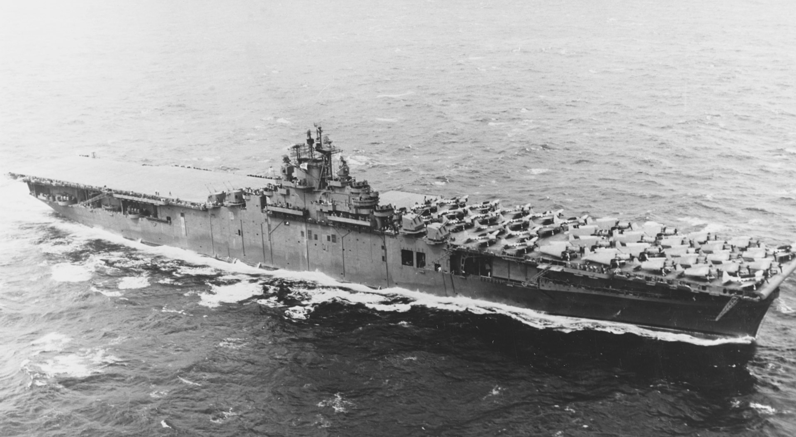
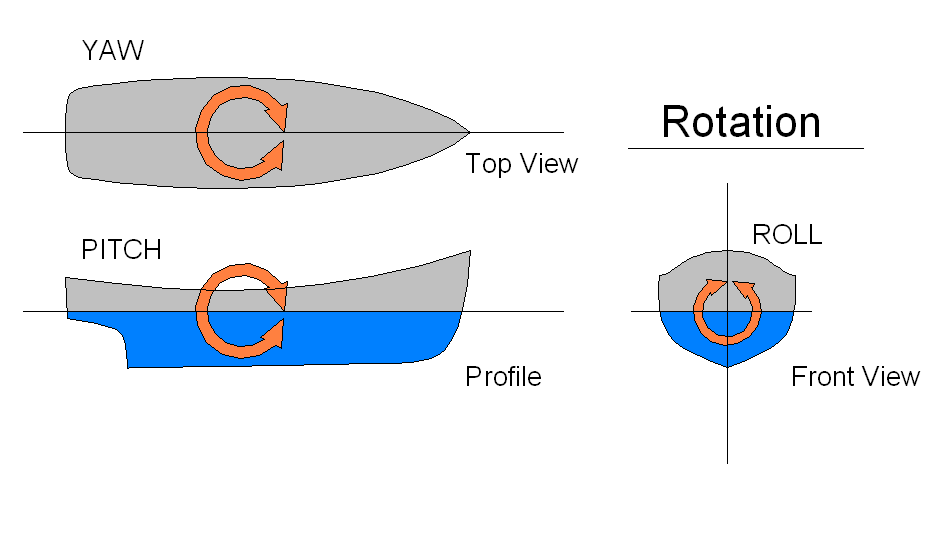
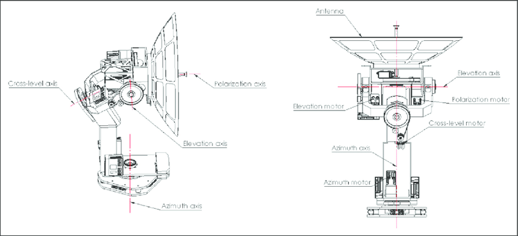
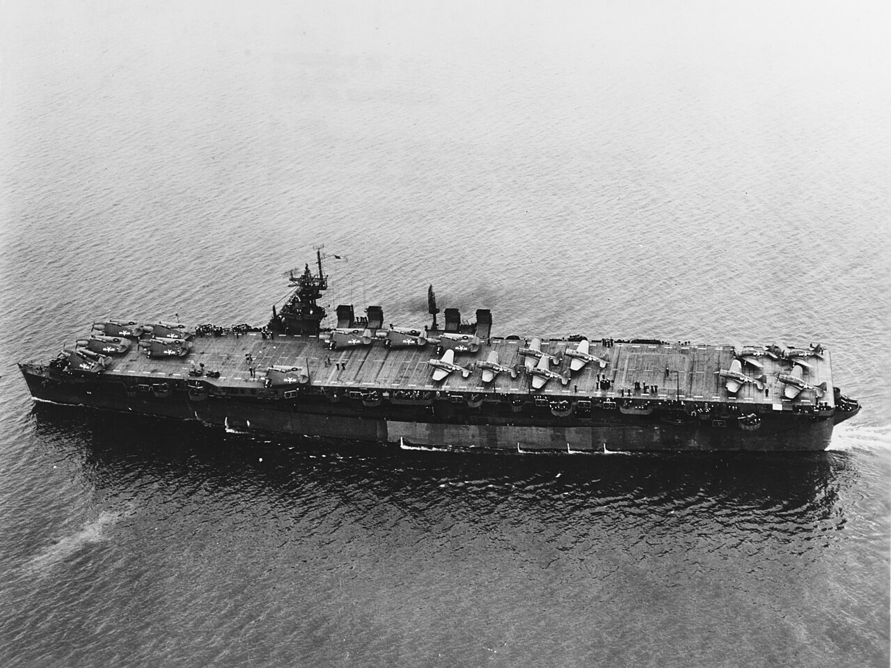
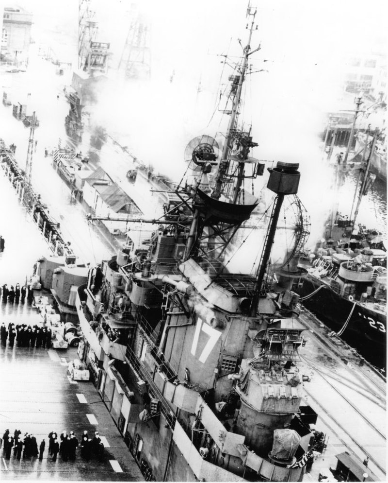
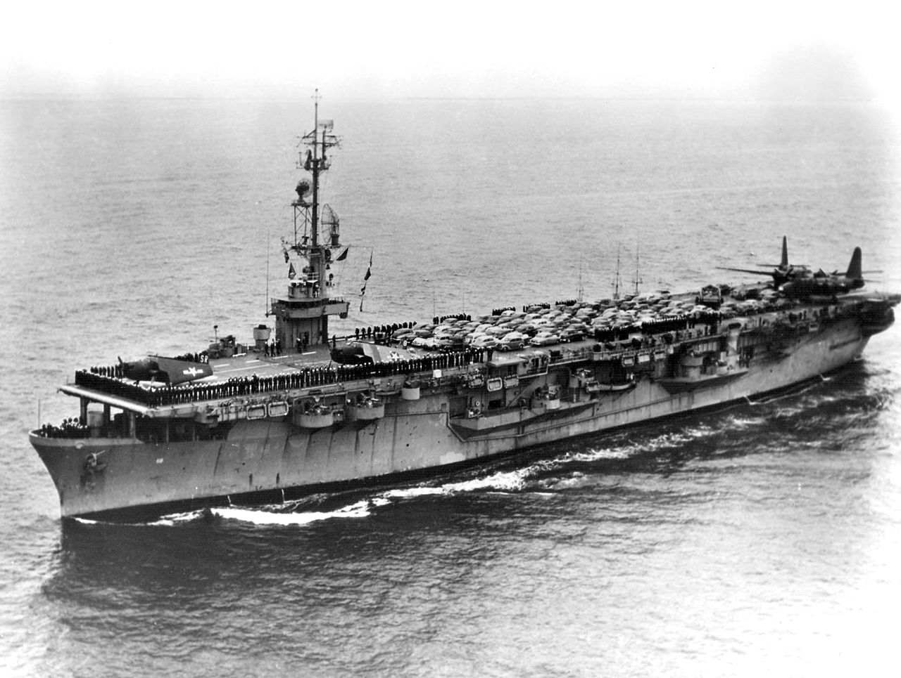
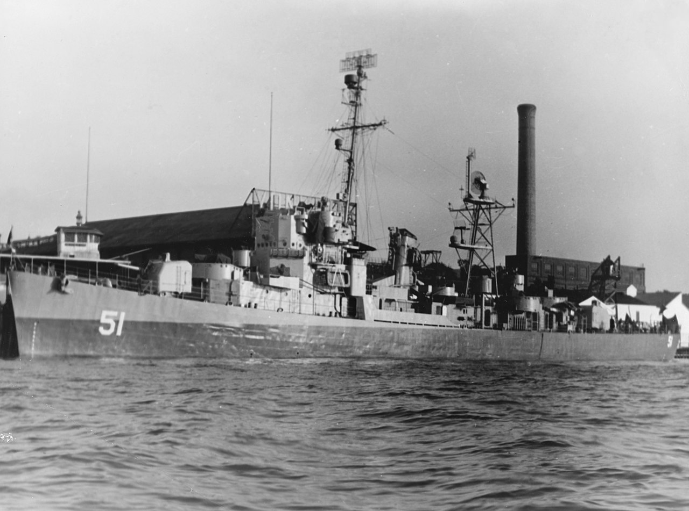
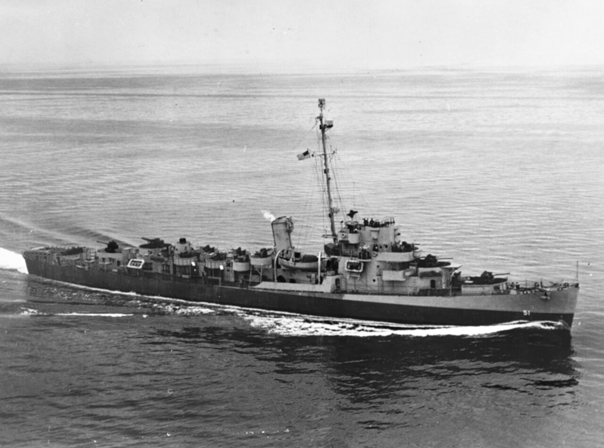

S Band 레이더의 등장 (3) - 해군도 간다
게시: 2025-01-16T06:30:01+09:00
<적군에게는 지더라도 육군에게는 질 수 없다> 미육군의 cavity magnetron을 이용한 SCR-584 레이더는 너무나 성공적이었으므로 평소부터 적군에는 지더라도 육군에는 질 수는 없다고 벼르고 있던 미해군도 금새 그를 따라함. 그래서 나온 것이 prototype 레이더인 CXBL 레이더. 이렇게 새로 나온 CXBL 레이더는 8번째 Essex급 정규항모 USS Lexington (CV-16, 3만6천톤, 33노트)에 최초로 탑재되었는데, 막상 탑재하려다 보니 기존 CXAM 레이더와는 약간 차원이 다른 문제를 고민해야 했음.

(원래 USS Cabot이라는 이름으로 건조되던 Essex급 8번 항모는 산호해 해전에서 자침된 USS Lexington을 기리기 위해 도중에 이름이 Lexington으로 바뀌었음) CXAM 레이더에 비해 매우 조밀한 레이더 빔을 쏘아대는 CXBL 레이더는 덕분에 해상도가 상당히 높아졌고, 그래서 과거 CXAM 레이더의 스코프에서는 가까운 거리까지 접근한 항공기들은 서로 신호가 겹쳐 보여 구분이 안 될 정도였으나 CXBL 레이더는 가까운 거리에서도 항공기 하나하나를 다 제대로 인식. 그래서 CXBL 레이더에는 그 좋아진 해상도를 최대한 누리기 위해 원거리용 scope와 근거리용 scope를 따로 각각 마련할 정도였음. 문제는 그렇게 해상도가 좋아지다보니, 레이더 빔을 쏘는 안테나가 흔들리면 곤란. 육군에서야 굳건한 대지 위에 트럭을 세우면 끝이지만, 군함은 거대한 항공모함이라고 해도 끊임없이 파도에 흔들려 pitch, yaw와 roll이 발생. 파도에 의한 이런 흔들림을 보정하지 않으면 기껏 만들어놓은 정확한 방위각이나 고도가 모두 큰 오차를 보일 수 밖에 없음.

(파도에 흔들리는 배의 움직임에 대한 영어 표현인 pitch, yaw와 roll에 대해서는 말로 설명하기 어렵고 그림이 쉬움) 그래서 어쩔 수 없이 도입한 것이 gyroscope와 연동된 기계적 3축 흔들림 보정 시스템. 이건 비싼 것도 문제지만 그보다 더 큰 문제가 무게. 강력한 레이더 빔을 쏘기 위한 접시 안테나 자체도 무거운 편이었는데, 그걸 더 안정적으로 만들기 위한 기계적 3축 흔들림 보정 시스템은 더욱 무거웠음. 그러다보니 안테나 플랫폼 자체의 무게만도 9톤에 달했음.

(안테나의 기계적으로 흔들림을 보정해주는 3축 흔들림 보정 시스템)
<머리가 너무 무거워서 고민>
3만톤급 항공모함에 9톤 정도는 별 거 아니라고 생각될 수 있지만 문제는 항모의 꼭대기에 이걸 올려야 한다는 것. 뱃바닥에 깔아두는 9톤과 꼭대기에 매달아두는 9톤은 항모의 안정성에 있어 큰 차이를 보여줌. 그래서 결국 이걸 탑재하는 군함은 정규항모에 국한될 수 밖에 없었음. 가령 당시 Essex급 항모가 쏟아져나오기 직전에 함께 완성된 9척의 Independence급 경항모에는 이걸 탑재하지 못했음.

(사진은 USS Independence. 상선을 기반으로 만들어진 호위 항모(CVE)와는 달리 순양함을 기반으로 만들어진 경항모(CVL)는 무엇보다 빠른 속력으로 미해군 함대와 함께 작전이 가능. 원래 미해군에서는 경항모의 약점이 뚜렷했기 때문에 건조에 부정적이었으나, 당장 가용한 항모가 부족한 점을 우려한 루스벨트 대통령의 고집으로 아직 건조 중에 있던 Cleveland급 순양함들 9척을 도중에 Independence급 경항모로 전환. 확실히 더 작고 더 짧고 더 좁은 경항모는 미해군이 우려한 모든 약점을 그대로 보여줌. 가령 함재기들의 이착함 사고율도 더 높았고, 피폭시 탄약고가 유폭되는 일도 발생했으며, 태풍이 몰아치는 거친 태평양에서 작전이 불가능한 시기도 더 길었음. 그러나 그럼에도 불구하고 역시 재빨리 머릿수를 보태는 데는 큰 도움이 되어서 1944년 이후의 작전에서 경항모들은 전체 항모전단 전투기의 40%, 뇌격기의 36%를 제공하는 전력을 구성. 가만 보면 급강하 폭격기는 제공하지 않았는데, 원래 의도된 함재기 구성은 전투기 9대, 급강하 폭격기 9대, 뇌격기 9대였으나 나중에 운용을 해보고는 그냥 전투기 24대와 뇌격기 9대로 운용하는 것으로 결정.) 이 CXBL 레이더는 초도형 모델이었고 여러가지 세부적인 내용을 보완한 양산형 모델은 SM radar라는 이름으로 나왔는데, 그런 제약 사항 때문에 이 SM radar는 전체 WW2 기간 동안 딱 26개 세트만 생산되었음. 물론 모두 24대의 Essex급 항모에 장착되었고, 일부는 영국 항모에 사용되기 위해 로열 네이비에게 인도됨.

(Essex급 정규항모 USS Bunker Hill (CV-17)에 장착된 SM 레이더의 접시형 안테나) 원래 이 SM 레이더는 MIT 전파 연구소에 의해 개발된 것이고 생산은 General Electric사가 맡았는데, MIT 연구소는 이 우수한 레이더가 무게 때문에 더 많은 군함에 장착되지 못한다는 사실에 개탄. 결국 연구에 연구를 더해 MIT는 이 레이더의 무게를 절반으로 줄인 SP 레이더로 개량하는데 성공. 결국 이 SP 레이더는 전함은 물론 순양함, 심지어 일부 특수 개량된 구축함에도 설치됨.

(SP 레이더가 달린 Commencement Bay급 호위항모 USS Sicily (2만1천톤, 19노트)

(SP 레이더를 후방 마스트에 달고 있는 호위 구축함 USS Buckley (DE-51, 1600톤, 24노트). 원래 느린 수송선단 호위를 위해 만들어진 싸구려 느림보 구축함인 버클리는 1945년 종전 직후 레이더 초계함으로 개조되어 저 SP 레이더를 장착.)

(WW2 기간 중 아직 레이더 초계함으로 개조되기 이전의 호위 구축함 USS Buckley의 모습. 보시다시피 주포가 3인치 양용포로서, 잠수함이나 항공기만 상대가 가능.)